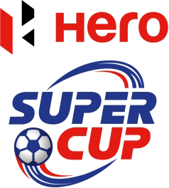

Posted at Date: March 13, 2019
Credit : রাইট স্পোর্টস ওয়েব ডেস্ক
ইস্টবেঙ্গল-মোহনবাগানসহ ৭ ক্লাবের বিদ্রোহ, সুপার কাপ বয়কট!

সুপার কাপের আগে বিরাট ধাক্কা। সরাসরি সর্বভারতীয় সংস্থার বিরুদ্ধে বিদ্রোহ করল সাত ক্লাব। আই লিগের ক্লাবগুলির প্রতি এআইএফএফ-এর বৈমাত্রেয়সুলভ আচরণের প্রতিবাদে সুপার কাপ থেকে নাম তুলে নিল ইস্টবেঙ্গল, মোহনবাগান, মিনার্ভা পাঞ্জাব এফসিসহ সাত ক্লাব। লিগ চলাকালীন এআইএফএফ সভাপতিকে ইমেল করা হয়েছিল এই সাত ক্লাবের সংগঠন থেকে। তাঁরা চেয়েছিলেন প্রফুল প্যাটেলের সঙ্গে কথা বলতে। কিন্তু এআইএফএফ থেকে কোনও উত্তর তো আসেইনি, সৌজন্যমূলক প্রাপ্তিস্বীকারও করা হয়নি। প্রধানত সেই কারণেই নাম তুলে নেওয়ার দাবি এই সাত ক্লাবের। নাম তোলেনি রিয়েল কাশ্মীর, চার্চিল ব্রাদার্স এবং শিলং লাজং। আর, একাদশ দল ইন্ডিয়ান অ্যারোজ তো এআইএফএফ-এরই, প্রশ্নই ওঠে না নাম তোলার!সাত ক্লাবের তরফে আলাদা আলাদা করে ইমেল পাঠানো হয়েছে, যা বুধবার তুলে দেওয়া হবে সংবাদমাধ্যমের হাতে, এমনই খবর। ইএসপিএন ডট ইন-কে এআইএফএফ-এর সচিব কুশল দাস সেই চিঠি পাওয়ার কথা স্বীকারও করেছেন। কিন্তু, জানাননি, কী ব্যবস্থা নেওয়া হতে পারে এই ক্লাবগুলির বিরুদ্ধে। সুপার কাপ মানে আইএসএল-এর দলগুলির বিরুদ্ধে সরাসরি খেলা যা শুরু হতে চলেছে ১৫ মার্চ, ওডিশায়। প্রতিযোগিতার ভবিষ্যৎ নিয়েই প্রশ্ন এখন।
মিনার্ভা মালিক রনজিৎ বাজাজ বরাবরের মতোই আক্রমণাত্মক মেজাজে। আই লিগের ক্লাবগুলিকে সব দিক দিয়েই বঞ্চিত করার অভিযোগ তিনি করে এসেছেন প্রথম দিন থেকেই। এখনও নিজের সেই অবস্থান থেকে সরে আসেননি। সুপার কাপের টাইটেল স্পনসর থাকা সত্ত্বেও অংশগ্রহণকারী ক্লাবগুলিকে আর্থিক কোনও সহায়তা দেওয়া হবে না, যা বাজাজের উষ্মার কারণ। তা ছাড়াও, সুপার কাপে খেলে জিতলেও যেহেতু এএফসি পরিচালিত কোনও প্রতিযোগিতায় খেলার সুযোগ পাওয়া যাবে না, খেলে কী লাভ, প্রশ্ন তুলেছেন তাঁরা। গতবারের আই লিগ চ্যাম্পিয়নরা এবার আই লিগে আছে দশম স্থানে, ১৯ ম্যাচে ১৭ পয়েন্ট নিয়ে। খেলা বাকি রিয়েল কাশ্মীরের বিরুদ্ধে। জিতলে বা ড্র করলে নবম স্থানে উঠে আসবে। হারলে থেকে যাবে দশম স্থানেই। যদি দশম স্থানে শেষ করে, সুপার কাপে খেলা পড়বে পুনে সিটির বিরুদ্ধে, আগামী ১৫ মার্চ। আর যদি নবম স্থানে থাকে, দিল্লি ডায়নামোসের বিরুদ্ধে খেলতে হবে ১৬ মার্চ। কিন্তু, মিনার্ভা-মালিক বাজাজ সর্বভারতীয় সংস্থার সচিব কুশল দাসকে ইমেল করে জানিয়ে দিয়েছেন, তাঁর দল খেলবে না সুপার কাপে।
চেন্নাই সিটি এফসি-র বিরুদ্ধে আই লিগের ম্যাচে মিনার্ভা পাঞ্জাব এফসি খেলার প্রকৃত স্পিরিট মেনে খেলেনি, এমন রিপোর্ট দিয়েছিলেন এআইএফএফ নিযুক্ত ম্যাচ কমিশনার বালাসুব্রকহ্মনিয়ম। চেন্নাই জিতলে চ্যাম্পিয়ন হবে, এমন অবস্থা ছিল ম্যাচের আগে। পয়েন্ট হারালে এবং ইস্টবেঙ্গল জিতলে, ইস্টবেঙ্গলই চ্যাম্পিয়ন। ইস্টবেঙ্গল জেতেও শেষ ম্যাচে, গোকুলম এফসি-র বিরুদ্ধে। ঘরের মাঠে চেন্নাই পিছিয়ে পড়েও জেতে ৩-১। সেই ম্যাচে দ্বিতীয়ার্ধে দল পেনাল্টি পাওয়ার পর চেন্নাইয়ের পেদ্রো মানঝি শট নিতে যাওয়ার সময় বিপক্ষের গোলরক্ষককে একটি দিক ইশারা করে সেই দিকেই বল মারেন। গোলরক্ষক তার উল্টোদিকে ঝাঁপিয়েছিল। এমন আচরণ আর কোনও ম্যাচে পেনাল্টি নেওয়ার সময় করেননি পেদ্রো, জানিয়েছেন ম্যাচ কমিশনার। শুধু তা-ই নয়, ম্যাচ কমিশনারের রিপোর্ট অনুযায়ী, মিনার্ভার জার্সি নম্বর ১৭ এবং জার্সি নম্বর ১০, যাঁরা দুজনেই বেশ ভাল খেলছিলেন, তুলে নেওয়া হয়েছিল দ্বিতীয়ার্ধে। ১৭ নম্বর জার্সির ফুটবলার, যিনি গোল করেছিলেন ৩ মিনিটে, তাঁকে তুলে নেওয়া হয়েছিল ৫৩ মিনিটে এবং ১০ নম্বরকে ৭৬ মিনিটে। দুজনেই আক্রমণাত্মক ফুটবল খেলছিলেন এবং দুজনেই অবাক হয়ে যান তাঁদের তুলে নেওয়ার সিদ্ধান্তে, রিপোর্টে লিখেছেন ম্যাচ কমিশনার। এমনকি, মিনার্ভার মালিক বাজাজ, সাইডলাইনে যিনি প্রতি ম্যাচেই উত্তেজক ভূমিকা নেন, ওই ম্যাচে একেবারেই শান্ত হয়ে বসেছিলেন বেঞ্চে, সেই কথাও উল্লেখ করা হয়েছে রিপোর্টে। চেন্নাই সম্পর্কে অবশ্য কোনও মন্তব্যই করেননি ম্যাচ কমিশনার, পেদ্রোর ‘অবাক-করা’ ব্যবহার ছাড়া।
এআইএফএফ অবশ্যই ফাঁপড়ে পড়েছিল এই রিপোর্ট পেয়ে। ম্যাচ কমিশনারের রিপোর্ট অনুযায়ী ব্যবস্থা নিতে গেলে চেন্নাইয়ের চ্যাম্পিয়ন খেতাব কেড়ে নিয়ে ইস্টবেঙ্গলকে দিতে হবে। ম্যাচ গড়াপেটার মতো বড় বিতর্ক তখন ভারতীয় ফুটবলেও! কিন্তু, এআইএফএফ-এর মনে হয়েছে, ম্যাচ খেলোয়াড়ি মানসিকতা মেনেই হয়েছিল। এমনকি, এআইএফএফ-এর সচিব কুশল দাস জানিয়ে দিয়েছিলেন কলকাতার দ্য টেলিগ্রাফ কাগজকে, ‘এএফসি-ও নজর রেখেছিল ম্যাচের প্রতি। ক্লিনচিট দিয়েছে এএফসি-ও। এআইএফএফ-এর তরফে ইন্টিগ্রিটি অফিসার জাভেদ সিরাজ মাঠেই ছিলেন। তাঁর দিক থেকেও কোনও খারাপ রিপোর্ট পাওয়া যায়নি। তাই ম্যাচ কমিশনারের রিপোর্টের ভিত্তিতে কোনও তদন্তের প্রশ্ন উঠছে না।’
মিনার্ভা মালিকও জানিয়ে দিয়েছিলেন, শেষ চার-পাঁচ ম্যাচে কখনও বিলাল পুরো ম্যাচ খেলেননি। আর মঈন উদ্দিনকে নামানো হয়েছিল দলের খেলায় গতিসঞ্চার করতে চেয়ে। হেরে গিয়েছেন বলেই এত কথা, জিতলে কোচের কৌশলকেই শ্রেষ্ঠ বলা হত, জানাতেও দ্বিধা করেননি বাজাজ। সমস্যা হল, ম্যাচ কমিশনারের রিপোর্টকে অগ্রাহ্য করা আইনত কি সম্ভব? এআইএফএফ যদিও জানিয়েছে যে, কমিশনারের রিপোর্ট তুলে দেওয়া হবে ইন্টিগ্রিটি অফিসারের হাতে, আর কিছু করার নেই তাদের। জবি জাস্টিনের বিরুদ্ধে রেফারি এবং ম্যাচ কমিশনারের রিপোর্ট না থাকা সত্ত্বেও নির্বাসিত করা হয়েছিল, সিদ্ধান্ত নিয়েছিল সর্বভারতীয় ফুটবল সংস্থা। শেষ ম্যাচে রিপোর্ট থাকা সত্ত্বেও তা বাতিলের খাতায় ফেলে দিয়েছে এআইএফএফ! মজার ব্যাপার, ম্যাচ কমিশনার কাণ্ডে মিনার্ভার পাশে এআইএফএফ দাঁড়িয়ে পড়ার দিনই মিনার্ভা-মালিক আবারও তুললেন বৈমাত্রেয়সুলভ আচরণের অভিযোগ!
Top Stories

Calcutta Sports Journalists' Club requests the pleasure of your company at its annual awards functionMore...

Jasprit Bumrah has been declared fit and he will now be available for selection for India's third Test against England at Trent Bridge. More...

Ronaldo has increased Juventus' standing among Europe's elite. More...